I have been a researcher at TCS Research in Bengaluru for five years, on the computational creativity team. My work is on visual AI systems, spanning generative models, representation learning, 3D and computer animation, mostly applied to visual art. Other interests include agents and reinforcement learning.
Before that I built tools to detect forged images and videos on a Ministry of Home Affairs project, which were deployed internally at the Bureau of Police Research and Development. I also mentor newer researchers on the team. Away from work: piano, ukulele, flute and sketching.
Animating chairs, planters and lamps that have faces
Facial expression transfer and automatic rigging are trained on human and animal bodies. Point them at a chair with a face and they break. We built a workflow that animates such objects from a single RGB video, and documented where each existing stage fails.
The fixes are a face for the object grounded in the FLAME head model, an open-mouth surface deformation that stops the lips from gluing together, and semantic rigging with SMPL-X motion retargeting.
My roleBuilt the end-to-end workflow, including the object-face synthesis, the open-mouth deformation, and the rigging and motion retargeting stages.
Illustration: a performer brings a chair and a planter to life in turn, and each copies their expressions and movement. Click the object to make it hop.More figures: results, workflow, faces, body motion
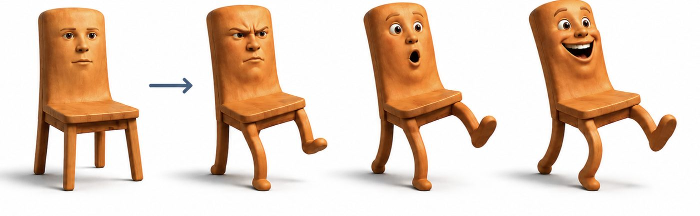
Result: a chair takes on the expressions and gait of a human performer.
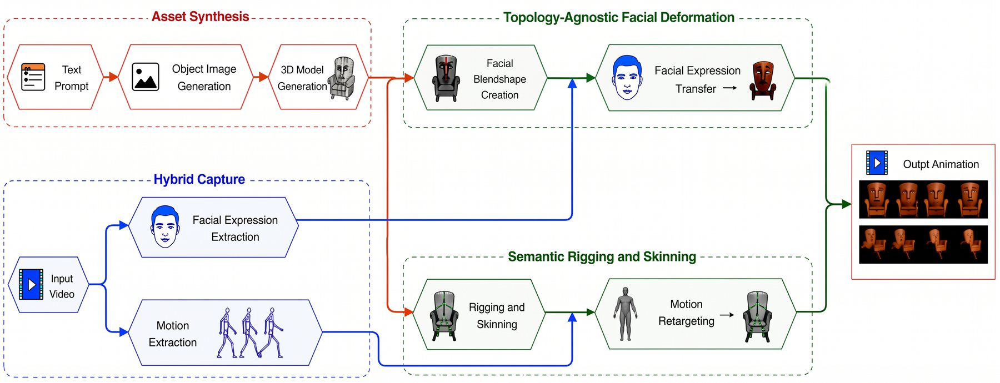
The end-to-end workflow, from a text prompt and a video to an animated object.
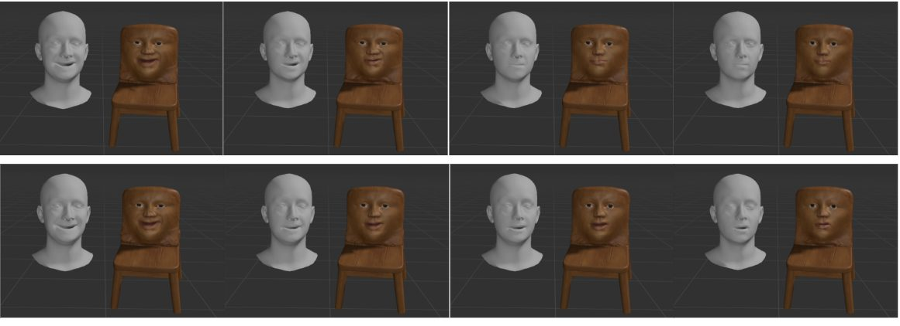
Source face (left) and target (right)
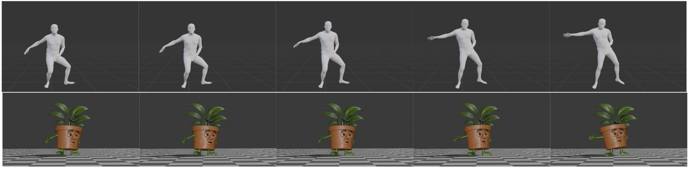
Body motion retargeted onto a planter
ICCV 2025 Workshops · AI4VAPresented in HawaiiICLR 2026 Blogposts
Sorting artworks by style, with a human in the loop
Neural networks tend to group paintings by what they show. Style is a different question, and people disagree about its definition. This work lets a person steer the clustering with a few rounds of feedback, and re-aligns the representation itself so the groups follow that person's idea of style.
We compared six style representations under two definitions of style. With simulated expert feedback, Adjusted Rand Index on WikiArt-4k rose from about 0.25 to about 0.75 using contrastive style descriptors. Some representations bend to feedback easily and others hardly move, so the choice of representation matters as much as the feedback.
My roleBuilt the feedback framework (centroid projection and encoder training) and ran the comparison across six style representations.
Representation
Illustration, not data from the paper. Each square is an artwork colored by its art movement, and each box is a cluster. Click a square that sits in the wrong box, or press Give feedback. One piece of feedback re-aligns the representation, so similar artworks move with it. A stubborn representation barely moves.More figures: clustering maps and collages from the paper
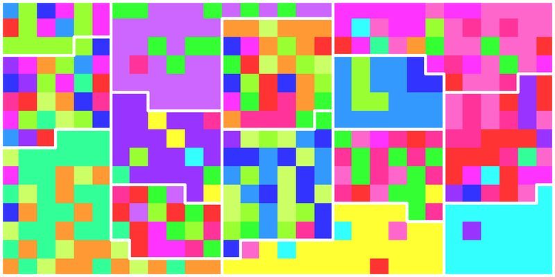
No feedback. Colors are scattered inside every cluster. Each square is an artwork colored by its art movement. Outlined regions are the 15 clusters.
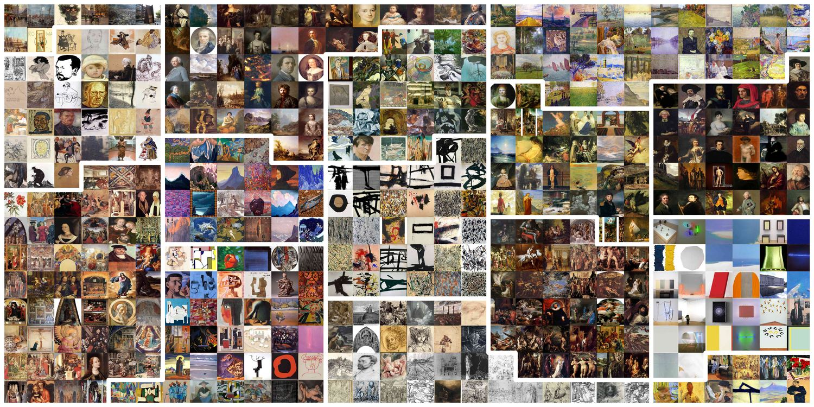
Before feedback
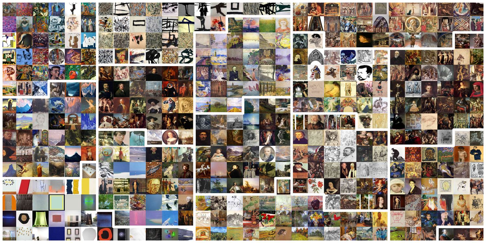
After complete feedback
ECCV 2026 Workshops · AI4VAICCV 2025 Workshops · Oral in HawaiiCVPR 2025 AI Art Gallery
Composite and Spatial Reflections: artworks rebuilt from artworks
Composite Reflections is a mosaic method where the finished artwork stays tied to the pieces it is built from. A vision-language model (InternVL2) curates a themed collection, and each cell of the target is filled by color-histogram retrieval followed by structural similarity (SSIM). Pieces keep their aspect ratio through color-matched borders instead of being cropped. Picasso's self-portrait, for example, is rebuilt from 485 of his own works. The method is also covered by a filed patent.
Spatial Reflections takes the idea to 3D. It rebuilds a model's UV texture map as a mosaic of paintings, so the whole object is encased in artworks. Each UV island is rotated to match the direction of its object, found with PCA, and small objects get a larger share of the texture map, so a painting on a wall stays recognizable. On a Starry Night view in a 3D Van Gogh's Bedroom, resizing lowered LPIPS from 0.32 to 0.12. We tested it on a tiger, a sea house and the Bedroom scene with 18 objects, using 78,946 paintings from WikiArt.
My roleContributed to the pipeline, mainly the color and structural similarity measures that match retrieved artworks to segments.
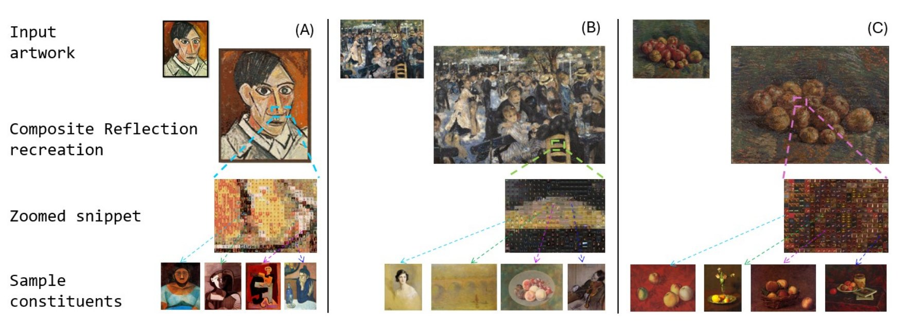
Composite Reflections: Picasso, Renoir and Van Gogh, each rebuilt from related artworks.
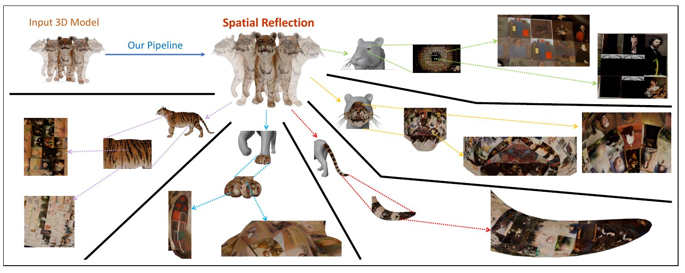
Spatial Reflections: a tiger encased in paintings. Callouts show the paintings on each part.More figures: both pipelines, why resizing matters
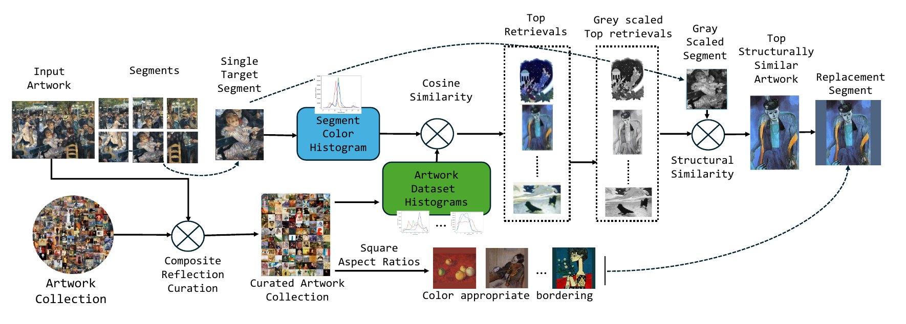
Composite pipeline: curate, match by color, choose by structure, replace the segment.
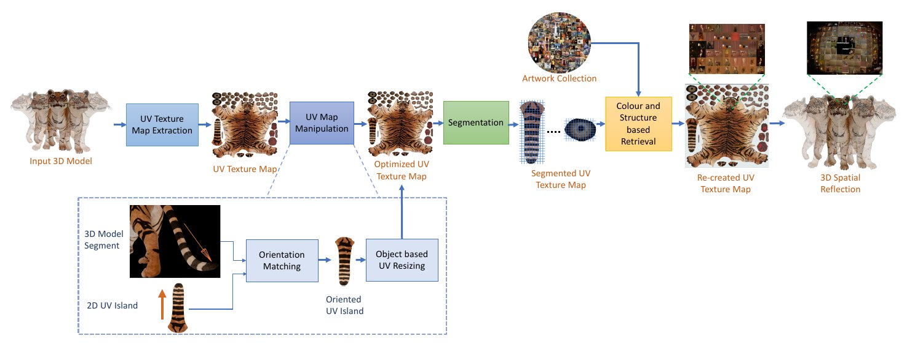
Spatial pipeline: fix the UV map, segment it, retrieve paintings by color and structure, wrap it back on the model.
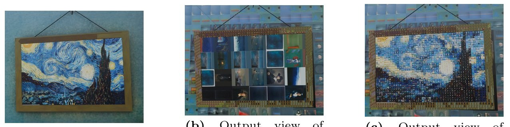
Why resizing matters: without it the painting on the wall is lost.
More work
MUNCH Museum, Oslo · 2023–24Draw to discover: sketch-based retrieval of Munch's artAn interactive app where a museum visitor draws and the system finds related works by Edvard Munch.
A project with the MUNCH Museum in Oslo. A museum shows only part of an artist's work at any time, so much of Edvard Munch's oeuvre stays out of sight. We built an art retrieval system that lets visitors explore it in an interactive way.
The app has a canvas where the visitor can draw anything. The system retrieves relevant paintings from Munch's works and shows them, by matching CLIP image and text embeddings against a vector database.
CVPR 2025 AI Art GalleryOf Style Bees and BeehivesAn animation that uses a beehive as an allegory for how a model clusters artworks by style.
An animation that uses a beehive as an allegory. When artworks are clustered by a neural style representation, they gather around central style figures, and the style definition a model has learned decides how it sees the whole collection.
ICCC 2024Style-Frame: designing applications around artistic styleA design framework for style-driven AI applications, worked through on 7,411 Edvard Munch artworks.
Generative models can restyle an image, imitate an artist, or group a museum's collection by style. Teams building such applications had little guidance on which technology fits which job. Style-Frame is a design framework with two parts: a conceptual model and a process model for applying it.
The conceptual model has five dimensions: how the style is specified, how it is transformed, which generative technology is used, how the quality of the output is judged, and how the process itself is judged. The process model walks a team through six stages, from checking that style is really part of the problem to deploying and maintaining the result.
We worked it through on the MUNCH Museum archive in Oslo, using 7,411 Edvard Munch artworks sorted into five style categories by shading and color. Two problems went through the framework: restyling a given image in Munch's style, and generating new images in his style under user-defined controls.
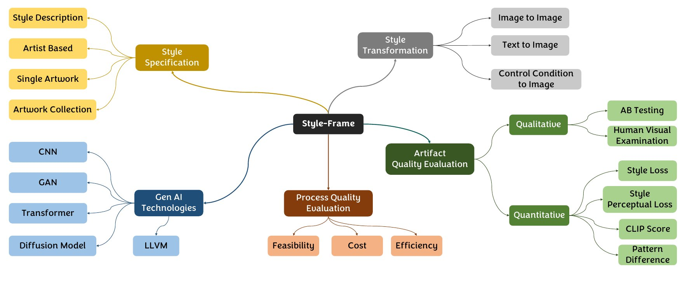
The conceptual model: five dimensions of a style-driven application.
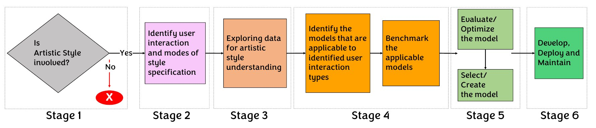
The process model: six stages from problem check to deployment.
MHA project · 2020–21Detecting forged obscene images and videosImage and audio models for a Ministry of Home Affairs project, with tools deployed at BPR&D.
A Ministry of Home Affairs sponsored project, carried out with the Bureau of Police Research and Development. The aim was to catch forged adult content, such as deepfaked faces, before it spreads on social networks. A video is checked for obscenity and then for forgery, in both pictures and sound.
Audio is usually ignored in video classification. We turned it into MEL spectrograms and classified them as images with EfficientNet-B2. Fine-tuning and focal loss with noisy-student weights lifted audio forgery accuracy from 88% to 94%, and fine-tuning VGG16 raised image obscenity accuracy from about 83% to 92%. Audio obscenity reached 93% and face forgery 92%.
I also built File Gateway, a desktop tool for Windows and Linux that watches the filesystem and removes flagged media on its own, in about 19 seconds for a 3-minute video. The research and tool demos were presented at BPR&D in Delhi, and the tools were deployed internally there for law-enforcement monitoring.
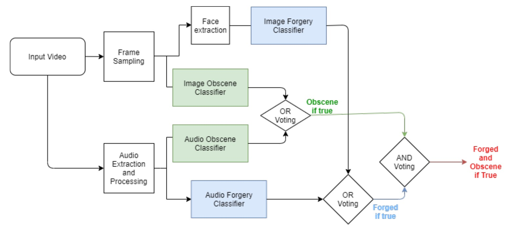
Image and audio models vote separately on obscenity and on forgery. A video is flagged only when it is both.
Publications and patents
2027
Expression rigs for non-humanoid charactersManuscript under review
Methods and systems for style-based clustering of artworks with preference feedbackFiled
Methods and Systems for Style-Based Clustering of Artworks by Aligning Neural Representations Through Centroid-Based Incorporation of Human FeedbackFiled
Composite ReflectionsFiled
Method and system for designing style-based AI applicationsFiled
A system and method for art creation in collaborative and contemplative interaction with the artwork collectionFiled